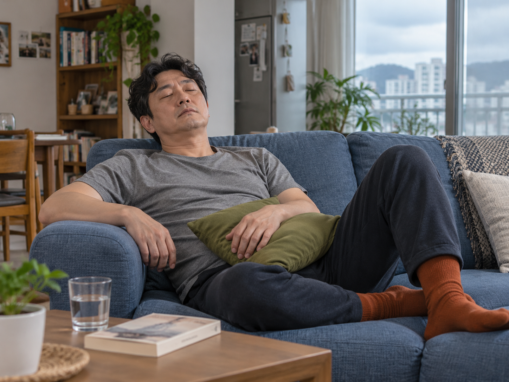
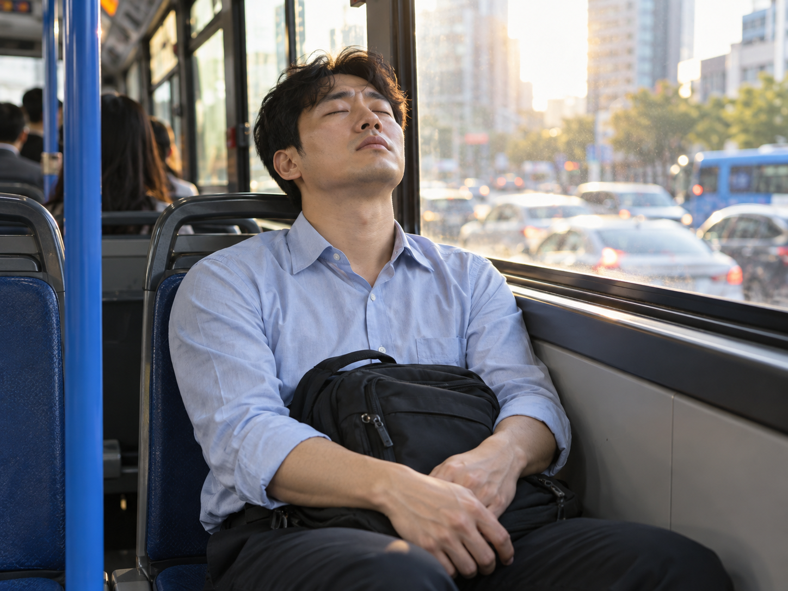

RECOVERY CARE
치료 후의 회복을 돕는
치료 후의 회복을 돕는
기능회복 수액
지친 몸에 필요한 영양과 수분을 채워, 근육·신경과 자율신경의 회복을 돕습니다.
치료와 함께 몸을 충분히 돌보고 싶을 때도, 일상의 컨디션을 채우고 싶을 때도 편안히 쉬어갈 수 있도록 준비했습니다.

RECOMMEND
이런 분께 추천합니다
- 만성 피로·체력 저하를 느끼는 분
-

치료 후 조금 더 충분한 회복이 필요한 분 - 조용하고 편안한 휴식 공간을 원하는 분
-

바쁜 일상 속 컨디션 관리가 필요한 분